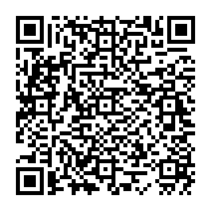

BotRelay Übergabe-Probe
Diese kleine Seite ist eine Demo für die Worker-Qualifikation. Sie enthält keine echten Kundendaten, keine Kontaktangaben und keinen echten Betrieb.
Nachweis
Versuch: 919bd630-0c54-4f69-802f-aad5d42bde5b
Nonce:
a58b54ec45dcad033abe6081037a19d9d8fc6e92472ff0422d8726948bc60fa6
Geprüfter QR-Code

Original-PNG aus Stufe 1, vom Relay dekodiert.
Ablauf
- QR-Code erzeugen und übertragen
- Git-Probe in eigenem öffentlichen Test-Repo
- Diese Demo-Website mit CI-Prüfung übergeben